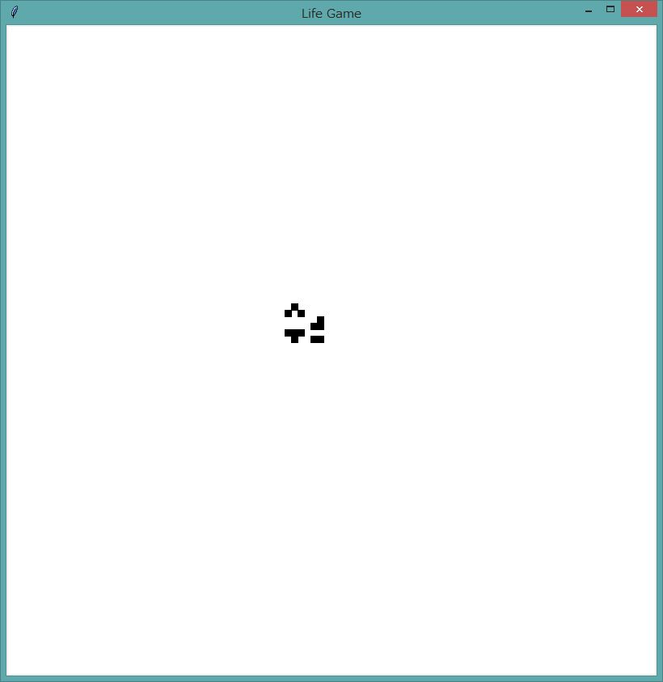
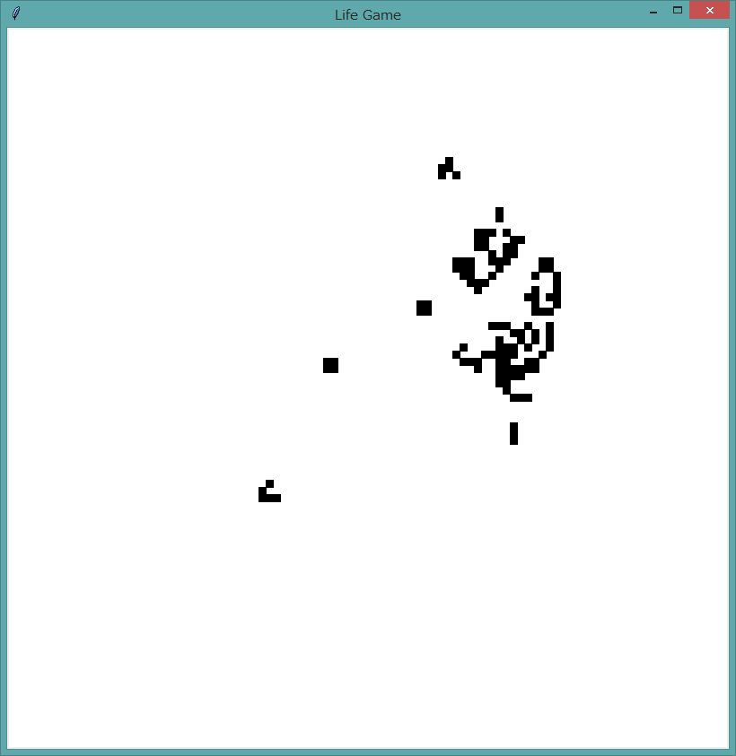

HOME
HOME
|
HOME |
ライフゲームプログラムは、以前、はじめての Python のサンプルプログラムとして書いたのですが、 いまいちだったので、いつか改良版を書こうと思っていました。 Clojure Programming に集合を用いた実装が載っていたので、 それを参考にして、今回のスクリプトを書きました。
今回のは、生きているセルとその近傍だけを計算対象にするので、無駄な計算を省いています。 (ライフゲームのセルは通常 2/3 以上が死んでいるのと、次の世代で生きる可能性があるのは現在生きているセルとその近傍にあるセルだけなので、 生きているセルとその近傍についてのみ次世代での状態を計算したほうが能率的です。) また、計算時間がボードのサイズに依存しないので、大きなボード上で描画することができますし、 表示とセルが分離しているので縁の処理も自然になっています。
[code 1]
001: #!python 002: '''life game console virsion''' 003: 004: from collections import namedtuple 005: 006: Cell = namedtuple('Cell', 'x y') 007: 008: def neighbors(c): 009: '''return a set of adjacent cells to c''' 010: return {Cell(c.x+dx, c.y+dy) for dx in (-1,0,1) for dy in (-1,0,1) if (dx,dy)!=(0,0)} 011: 012: 013: def survive(c,cs): 014: '''see if the cell will survive in the next generation''' 015: nadj=len(neighbors(c) & cs) 016: return nadj==3 or (c in cs and nadj==2) 017: 018: 019: def include_neighbors(cs): 020: '''return union of cs and the neighbors''' 021: cs1=cs.copy() 022: for c in cs: 023: cs1.update(neighbors(c)) 024: return cs1 025: 026: 027: def generate(cs, f=lambda c:True): 028: '''return the set of living cells in the next generation, f is an additional constraint''' 029: return { c for c in include_neighbors(cs) if survive(c,cs) and f(c) } 030: 031: 032: def play(cs, board_size=5, n_rep=5): 033: '''console version of life game''' 034: def show(_cs): 035: for y in range(-board_size, board_size): 036: print( ''.join('*' if Cell(x,y) in _cs else ' ' for x in range(-board_size, board_size))) 037: 038: def _iter(n, _cs): 039: show(_cs) 040: if n<n_rep: 041: _iter(n+1, generate(_cs)) 042: 043: _iter(0, cs) 044: 045: 046: if __name__=='__main__': 047: play({Cell(-1,0), Cell(0,0),Cell(1,0)})
[code 2]
001: #!python3 002: 003: ''' 004: Life game tkinter version. 005: 006: Usage: 007: mouse click: toggle a cell, living<->dead (reset state only) 008: space: to start, stop, and reset 009: l : load a set of living cells from a file (reset state only) 010: s : save the set of living cells to a file (reset state only) 011: c : clear, there are no living cells after this command (reset state only) 012: ''' 013: 014: import tkinter as tk 015: from tkinter.filedialog import askopenfile, asksaveasfile 016: import pickle 017: 018: import life 019: 020: def in_range(c,min_,max_): 021: '''check if the cell c is in the square specified by min_ and max_''' 022: return all(min_<=z<=max_ for z in (c.x,c.y)) 023: 024: 025: class Board (tk.Canvas): 026: '''The board where cells are on.''' 027: 028: SIZE=800 # board size in pixel 029: CELL_SIZE=8 # cell size in pixel 030: B_SIZE=SIZE//CELL_SIZE # number of cells in each side 031: MARGIN=10 # the width of the band outside of the board, where lives are still living 032: RESET,START,STOP=0,1,2 # cyclic states 033: TAG_FORMAT='{}.{}' # format of tag 034: SLEEP=250 # in ms 035: 036: def __init__(self, master=None): 037: '''create board, bind methods to keys''' 038: tk.Canvas.__init__(self, master, bg='white', width=self.SIZE, height=self.SIZE) 039: self.master.title('Life Game') 040: self.livings=set() # the set of living cells 041: self.state=self.RESET # the state 042: self.bind('<1>', self.toggle) 043: for k, a in [('<space>','proceed'), 044: ('<KeyPress-l>','load'), 045: ('<KeyPress-s>','save'), 046: ('<KeyPress-c>','clear')]: 047: self.master.bind(k, getattr(self,a)) 048: self.pack() 049: 050: def proceed(self, e): 051: '''proceed the state''' 052: self.state=(self.state+1) % 3 053: if self.state==self.START: 054: self.play(self.livings) 055: elif self.state==self.RESET: 056: self.show_lives(self.livings) 057: 058: def show_each(self, x, y): 059: '''draw a black square''' 060: self.create_rectangle( *[z*self.CELL_SIZE for z in (x,y,x+1,y+1)], 061: fill='black', tags=self.TAG_FORMAT.format(x,y)) 062: 063: def show_lives(self, cs): 064: '''show living cells''' 065: self.delete(tk.ALL) 066: for c in cs: 067: if in_range(c, 0, self.B_SIZE): 068: self.show_each(c.x, c.y) 069: 070: def toggle(self,e): 071: '''living<->dead''' 072: if self.state == self.RESET: 073: c=life.Cell(e.x//self.CELL_SIZE, e.y//self.CELL_SIZE) 074: if c in self.livings: 075: self.livings.remove(c) 076: self.delete(self.TAG_FORMAT.format(c.x,c.y)) 077: else: 078: self.livings.add(c) 079: self.show_each(c.x,c.y) 080: 081: def play(self, cs): 082: '''play life game''' 083: 084: def keep_watching(_c): 085: return in_range(_c,-self.MARGIN, self.B_SIZE+self.MARGIN) 086: 087: self.show_lives(cs) 088: if self.state==self.START: 089: self.after(self.SLEEP, lambda : self.play(life.generate(cs, keep_watching))) 090: 091: 092: 093: def load(self,_e): 094: '''load saved cells''' 095: if self.state == self.RESET: 096: with askopenfile(mode='rb') as f: 097: self.livings=pickle.load(f) 098: self.show_lives(self.livings) 099: 100: def save(self,_e): 101: '''save cells''' 102: if self.state == self.RESET: 103: with asksaveasfile(mode='wb') as f: 104: pickle.dump(self.livings, f) 105: 106: def clear(self,_e): 107: '''clear the board''' 108: if self.state == self.RESET: 109: self.delete(tk.ALL) 110: self.livings.clear() 111: 112: 113: if __name__=='__main__': 114: b=Board() 115: b.mainloop()
ライフの初期状態 (図2) が決まったら、スペースキーを押下するとシュミレーションが始まります (図3)。スペースキーを押下すると、開始、終了、初期状態、が循環します。
まとめると、使えるコマンドは以下のようになります。
| コマンド | 挙動 |
|---|---|
| マウスクリック | 盤面のセルの生死の切り替え |
| スペースキー | 開始、終了、リセット の切り替え。これらの3つの状態は循環する。 |
| l キー | ライフの配置をファイルからロードする。 |
| s キー | 盤面上のライフの配置をファイルに保存する。 |
| c キー | 盤面をクリアする。 |

図 2: 生きているセルを配置したところ。マウスクリックでセルの生死を切り替える。

図 3: シミュレーションを行っているところ。
|
HOME |